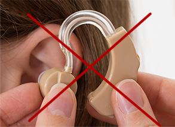
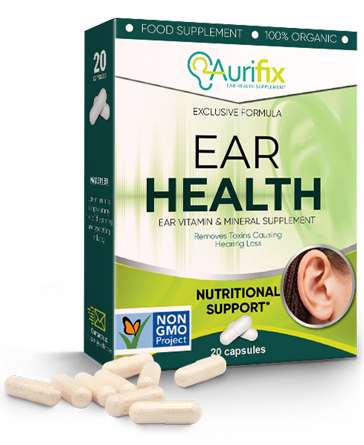

End of the hearing aid era!
The Revolutionary Therapy of a Filipino Professor naturally
restores hearing within 28 days
Does the new hearing recovery method hurt the hearing aid market? Big names in laryngology have no doubt
that this will happen. Together with the development of a natural macromolecular formula by a Filipino, the
long-awaited reversal in the struggle for better hearing has finally arrived.
Already
over 14,000 people who have
applied this therapy recover their damaged hearing cells within 28 days. As a result, they have regained
their hearing, even those who were threatened with complete deafness. How is that possible?
Prof. John Mendoza (Molecular Biology Expert) decided to help his mother with her hearing, which was getting weaker and weaker. That's what started a this laryngology revolution. The professor, after 11 months of laboratory research, worked out a natural, safe and easy to use formula that enhances hearing.
Professional medical journals have already described this therapy as a "pioneering achievement in the field of laryngology" and the professor has received a nomination for the Nobel Prize. Thanks to the action of his formula, even people with advanced hearing problems are able to restore hearing cells, to regain their natural hearing ability and eliminate the need to carry a hearing aid.
"The hearing aids are money thrown to the wind!" What are the reasons for this opinion?
This is confirmed by over 14,000 satisfied users of the macro-molecular hearing recovery formula, people who no longer carry hearing aids . So we decided to pay attention to these devices. More precisely, we decided to check what their shortcomings are and what do the people using them have to deal with. Here are the conclusions:
-
Hearing aids are expensive
The value of one apparatus is 1 to 6 thousand leva and this is not a one-off expense. Batteries are also needed, and the annual battery expenses are over 200 leva! Even if someone is able to afford such a charge, he will not avoid the other drawbacks of this device.
-
It creates shame and discomfort
People who wear a hearing aid suffer for this reason because they are perceived as disabled. It takes an emotional toll on them when they have to answer questions like "What is this thing that sticks out of the ear?".
-
They emit secondary sounds
People using a hearing aid complain of the terrible quality of the perceived sounds. Hearing aids generate irritating buzzing that leads to irritation and stress.
-
It causes infections that deepen hearing problems
Hearing devices can cause fungus, which can lead to dangerous ear infections. These infections further reduce hearing.
-
They enhance sounds only during use
The appliance should be removed during contact with water, for example before bathing. It is also taken off during sleep. They can not lead to permanent hearing recovery.
That is why Professor Mendoza's macro-molecular therapy represents a real breakthrough in the fight for better hearing
Hearing aids artificially amplify sounds only during wear. Instead, Prof. Mendoza 's therapy restores hearing cells by regaining their natural ability to hear, without having to carry a hearing aid. The ingredients it contains have strong restorative properties. These ingredients supply the ear with everything they require to restore the hearing even of people with serious hearing loss.
Everyone is now able to regain 100% hearing ability
The therapy is marketed under the name Aurifix. The formula is capsules, which must be taken with more water.. You just have to drink it every morning. Applying the therapy is completely safe, as evidenced by further research by the German research center in Stuttgart. These studies also show that the therapy has over 98% efficacy. Thanks to this, people between the ages of 38 and 93, in just 28 days, have achieved incredible results in dealing with hearing problems. They manage all this regardless of the age, cause, and duration of hearing problems.
For these people, immediately after drinking it, the auditory canal was "unclogged". Thanks to this, hearing was increased by 50% and they began to perceive the full range of sounds coming from a farther distance. In thefollowing days of therapy, their hearing focused better on human speech, thanks to which they began to clearly hear conversations at an even greater distance. Then they got rid of the pain and the tingling in the ears caused by the contamination of the auditory canal.
As a result, they reduced the congestion of hearing centers in the brain by as much as 80% and increased their energy level three times. This is not all - after 28 days of therapy, the participants in the therapy unanimously admitted that their hearing was now more acute. Now they hear exactly as di when they were between 25!
The documented effects of therapy speak for themselves:
50% better hearing at long distances
Hearing Restoration - Accurate understanding during conversations
15 times better audibility of whispers and low tones
Restoring hearing acuity to the levels of a 20-25 year-old.
First week
Second week
Third week
Fourth week
First week - hearing comfort increases by 50%, better hearing at a distance
Second week - recovery of dead and damaged hearing cells, accurate understanding of conversation
Third week - 15 times better audibility of whispers and low tones, reduction of tinnitus
Fourth week - taking the load off from the brain's hearing centers, restoring hearing acuity to the levels of a 20-25 year-old.
Ed Apostol 51 years old from Cebu City is the first person to use Aurifix:

"With me hearing problems started long ago, when I was 40. I thought it was normal - I'm getting old, so I hear less well. A few years later, however, I couldn't understand what they were saying to me. I was ashamed to constantly ask people: "What? Please? ". I even used a hearing aid. I gave a pile of money for this thing - two whole pensions I spent, but it only hindered me! I did not want have surgery. I couldn't let them open up my head! In time I found out about Aurifix. Now I know that if I had not applied this therapy, I would probably have made the biggest mistake in my life. I was deaf like a log, and I only needed 4 weeks and now I hear even whispers, no hearing aid! No problem watching TV, listening to my radio and talking on the phone. I finally hear people on the street, in the store or on the bus. It's so nice to hear the sound of the trees and the singing of the birds in the park again. Thank you very much."
Why give a pile of money for an ineffective hearing aid, provided it is possible to recover hearing in a natural and inexpensive way?
The efficacy of Aurifix has been confirmed by the German research center in Stuttgart. Prof. Mendoza is constantly collecting nominations for awards for his scientific discovery, including nomination for the Nobel Prize.
The good news is that Aurifix can be taken at the discount club, for less money. You will receive the therapy only through the link below.

Comments
Michael Ramos
And they say that the Pinoy people have not been successful in the world. Fantastic achievement, good for our countryman
Joel Bautista
I used this it got it when I signed up for this discount club for and it did not cost a lot, but I improved my hearing significantly! now I feel like a newborn, I recommend it with all my heart!
Romeo Gonzales
something is not right. what exactly does "28 days and your hearing is fixed" mean? Sounds fishy
Maria Garcia
@ Romeo When Institutes do clinical research of any ingredient, the result is stated in some time parameters parameters. Such are the requirements of the research. The average time for achieving effect was apparently 28 days !!! This is an incredible effect.
Jocelyn dela Cruz
Ladies and gentlemen, let me say I've suffered with hearing aids for over 6 years. For many years I've been working at the docks and it's what probably what damaged my hearing. I've spent 10000 pesos just for hearing aids. For others it might not be a lot but I'm a dock worker. They bothered me all the time, putting them on, taking them off, keeping them away from my grandkids, and when I had it on I even scared them. But my daughter gave me this product, and the aids went in the trash – I have my hearing back! I don't know if it works for everyone, but you have to try it
Mark Flores
I've been using Aurifix and it's definitely worth getting it. I've only been using it for 2 weeks, but I hear a lot better and I'm without a hearing aid. I finally hear myself the way I'm supposed to.
Maricel Gonzales
as I started to read, I did not expect to read about such miracles. I have to use this therapy because I'm sick of this hearing aid. I constantly conceal it with my hair, and that is how you can see these constant noises and writing, you can just go mad. will finally get rid of it, WONDERFUL
Rowena Lopez
I work as a clerk and constantly communicate with people. I constantly ask them to repeat their words, it was so humiliating. They finally wanted to fire me, so I took this terrible device called a hearing aid, with a cable coming out of the ear. However, I also have to look good. I'm not that old yet, and I'm a lady. Several times now I've set my sights on someone, so to say, but I was ashamed of the aid. And now I will finally change my life, thank you very much !!! :)
Ronald Perez
Annalyn exactly in this respect appearance does not matter. you are right, you will feel a big difference by doing the Aurifix therapy. I had severe hearing loss so I had to use it for a month and a half to get my hearing at 100% but I'm happy that I finally found a better job and I meet people. I wish you success too.
Gina Fernandez
My mother is already old and I have a question about those who have used how old are there people who are over 80 years or some acquaintances or relatives have used it? I want to know if there is hope. I don't know anymore if she hears me, and the neighbors are banging on the wall when she watches the news as it's too loud. Please help me decide Anna
Francisco Castillo
Jhanine with me hearing problems are inherited, and my father and I have enjoyed, he is 93 years old. He fixed his hearing after only 3 weeks and I'm not afraid for him anymore. I recommend it
Gina Fernandez
damn much merit for the answer I will give this to my mother then
Elizabeth Santos
I have used it too, brought my hearing to where it was 15 years ago :) I recommend it
Gloria Villanueva
I want to try it right away, however, I'm afraid it might not work. I've given a lot of money for useless stuff
Gloria Villanueva
Oh never mind, I just read that there is some guarantee, so everything is fine. I will give it a try
Rolando Rivera
I am still young (36 years old) and I still don't have hearing trouble, but I work with loud sounds so I use Aurifix prophylactically to prevent loss. So if someone else like me works with among noise, I recommend it
Danilo Aquino
I'm waiting for delivery no, I will soon write if it works